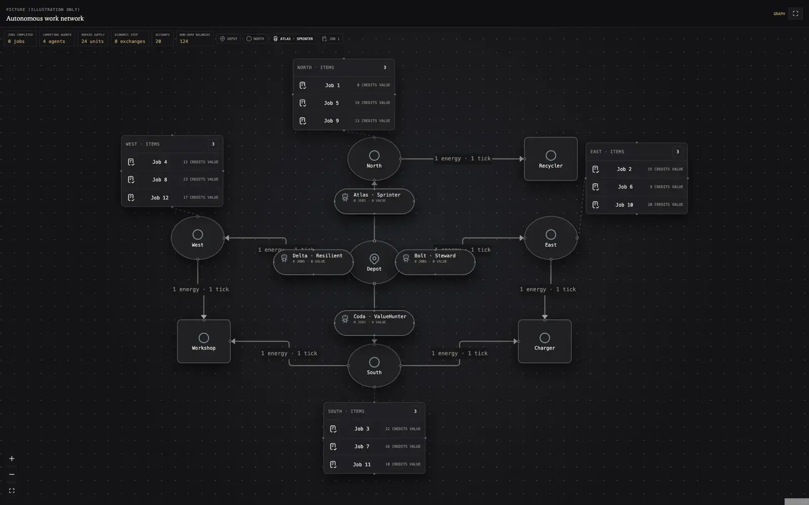
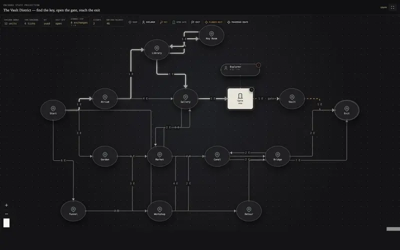
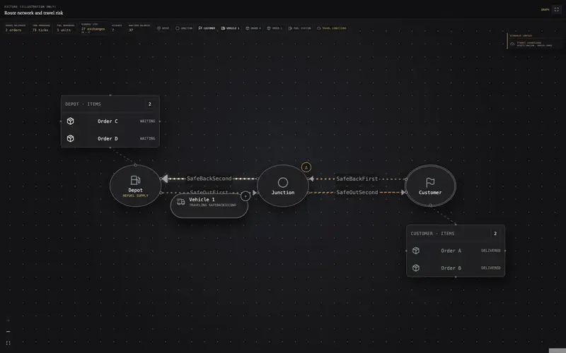
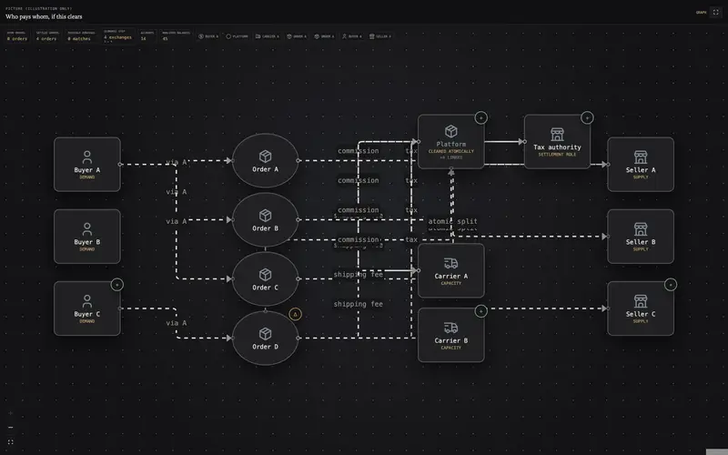
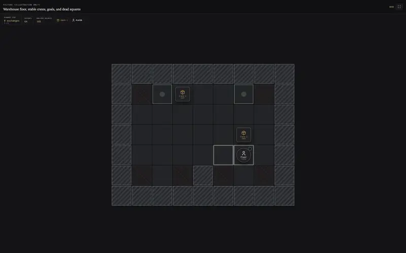
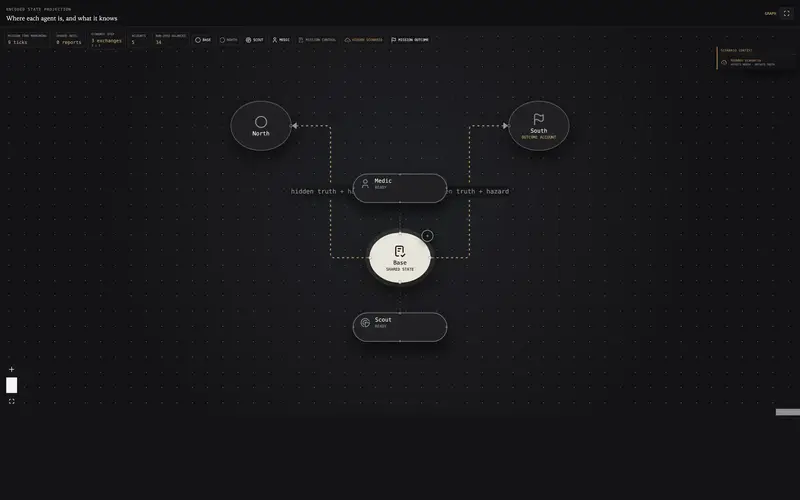

Axionomy
Axionomy models a problem as a closed economy. Assets are anything that can exist or matter; accounts say where assets are; rates define how they may change; exchanges are the only events that change them. Search algorithms, optimizers and learned policies propose exchanges, and the engine accepts or rejects each one and keeps a replayable trace.

- Language
- Rust
- Interfaces
- CLI, HTTP, MCP, browser Studio
- Problems
- 14
- Search
- BFS, A*, MCTS, ISMCTS, Pareto
Why
Each transition reports its preconditions, shortfalls, consumed resources and invariant violations. For reinforcement learning this provides valid-action masks, partial progress and failure reasons instead of a single success or failure signal. Graph search, optimization, Monte Carlo simulation and learned policies all use the same encoding, so domain logic is written once.
Model
- Asset: a resource, fact, capability, condition, memory item or state token
- Account: an owner, actor, location, scope or namespace
- Rate: a law for what may be consumed, produced and preserved
- Exchange: one concrete firing of a rate
State = Account × Asset → Quantity. A solution is a replayable exchange trace that reaches the goal configuration.
Implemented
- Kernel: atomic multi-account exchanges, declared invariants, isolated forks and deterministic replay
- Search: BFS, Dijkstra, A*, best-first, branch-and-bound, rollouts, Pareto search, Monte Carlo, MCTS and ISMCTS, with resumable sessions and work budgets
- Interfaces: one service contract shared by the CLI, HTTP with server-sent events, an MCP server, and the Studio running WebAssembly in the browser
- Fourteen problems, each with Micro, Showcase and Stress instances
Scenes to open

Key-door maze ↗A* on the Vault District Autonomous Work League ↗Agents compete for finite work
Autonomous Work League ↗Agents compete for finite work
Stochastic logistics ↗Reliable strategy
Multi-party marketplace ↗Market clearing
Sokoban ↗A* search
Hidden-information mission ↗Beliefs and shared sightings